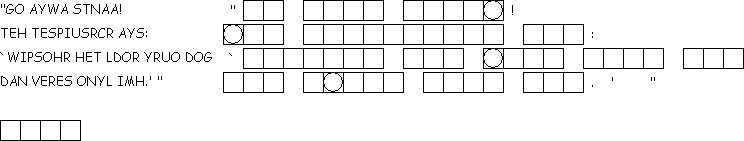

Unscramble each of the clue words. Take the letters that appear in
This
week's lessons: Genesis
2:15-17; 3:1-7 , Psalm
32 , Romans
5:12-19 , Matthew
4:1-11
Elementary School Pew-work
I S A T A N M V T O O K
|
(Matthew 4:8-10) Again, the devil took him to a very high mountain and showed him all the kingdoms of the world and their splendor; {9} and he said to him, "All these I will give you, if you will fall down and worship me." {10} Jesus said to him, "Away with you, Satan! for it is written, 'Worship the Lord your God, and serve only him.'" (NRSV) |
Word List |
from http://www.efree.mb.ca/lectionarypuzzles free to distribute for free with this notice. Words are in a straight line left to right or top to bottom |
||
1.
How did the devil ask Jesus to prove he was the Son of God?
_____________________________________________________________
2.
What was the second way the devil asked Jesus to prove that he was
the Son of God?
_____________________________________________________________
3.
What did the devil promise Jesus if he would worship him?
_____________________________________________________________
4.
How did Jesus answer the devil?
_____________________________________________________________
Questions taken from Sunday School Lessons; http://www.sundayschoollessons.com/lent1les.htm

Unscramble
each of the clue words. Take the letters that appear in
 boxes and unscramble them for the final message.
boxes and unscramble them for the final message.